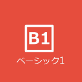
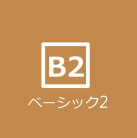
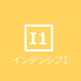
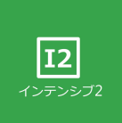
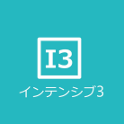

Lab BahasaMalay-IndonesiaKeio SFC
Macam-macam Kelas
- 
Kelas Basic 1 adalah kelas pemula yang direkomendasikan untuk para mahasiswa yang belum pernah belajar Bahasa Indonesia.
- 
Kelas Basic 2 merupakan kelas lanjutan dari kelas Basic 1. Materi-materi yang telah dipelajari pada kelas Basic 1 akan diulang dan didalami pada kelas ini.
- 
Kelas Intensive 1 ditujukan untuk pemula dimana dan dilaksanakan 4 kali seminggu secara efektif. Di kelas ini para mahasiswa akan diajarkan tata bahasa dasar, percakapan dan kosa kata sehari-hari. Taraf ini sama dengan Level D dalam UKBI.
- 
Kelas Intensive 2 merupakan lanjutan dari kelas Intensive 1 atau Basic 2. Maksud utama kursus ini adalah meningkatkan kemahiran mahasiswa di bidang tatabahasa, penggunaan imbuhan-imbuhan dan kemahiran percakapan dalam bahasa Indonesia. Taraf ini sama dengan Level C dalam UKBI.
- 
Kelas Intensif 3 adalah kelas level menengah-atas yang merupakan lanjutan dari kelas Intensive 2. Kelas ini diselenggarakan oleh UKSW dan bermaksud untuk meningkatan kemampuan Bahasa Indonesia para mahasiswa di bidang tata bahasa, percakapan sehari-hari, kosakata, serta membaca dan menulis.
-
Kelas Skill merupakan kelas bahasa Indonesia di SFC dengan level tertinggi. Di kelas ini para mahasiswa diharapkan sudah menguasai pelajaran-pelajaran di kelas-kelas sebelumnya. Pada kelas ini, para mahasiswa akan menonton video dan membaca artikel dalam bahasa Indonesia.